Behzad Bozorgtabar Machine Learning Group Leader & Lecturer at EPFL
|
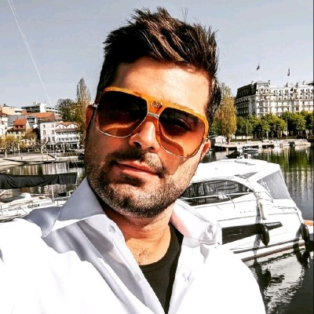 |


Biography
I am a senior scientist at the Centre for Biomedical Imaging (CIBM), with the main affiliation with the Signal Processing Lab (LTS5) at the Swiss Federal Institute of Technology (EPFL), Lausanne, Switzerland. I am also affiliated with the Lausanne University Hospital (CHUV), Department of Radiology. At the CIBM and EPFL-LTS5, I am the machine learning leader (ML) for the medical imaging group.
My previous role as Post Doctoral Researcher at IBM Research-Australia led to the development of novel deep learning-based medical image analysis methods leading to peer-reviewed scientific articles and patents.
My research interests lie in the general area of machine learning, medical image analysis, and computer vision, particularly in deep representation learning, as well as their applications in domain adaptation and self-supervised learning. My research's ultimate goal is to develop robust deep image representations that capture and understand the world, as well as our human eye and mind, do. Those representations will form the basic building block of downstream tasks in many vision-based applications.
News
- [6/2021] Our paper on learning whole-slide segmentation from inexact and incomplete labels using tissue graphs has received acceptance from MICCAI 2021.
- [4/2021] Our paper on annotation-efficient domain adaptation has received acceptance from MIDL 2021.
- [3/2021] Our paper on evaluating the graph explainers has received acceptance from CVPR 2021.
- [2/2021] Our invention on image domain adaptation has been filed.
- [2/2021] Our paper on self-attentive cross-modality domain adaptation has received acceptance from the IEEE Transactions on Medical Imaging (T-MI).
EPFL Computer Vision Talks
| 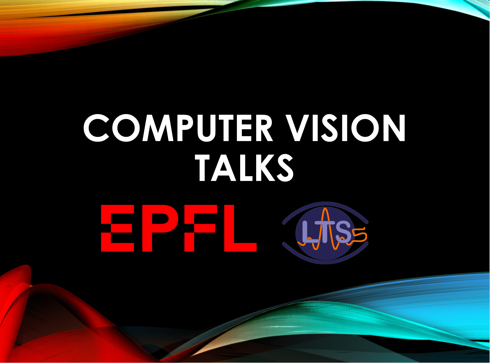 | I am organizing the EPFL computer vision reading group’s meetings, scheduling, and hosting virtual talks.
[YouTube Channel] |
Selected Publications (Since 2014) [Google Scholar]
| 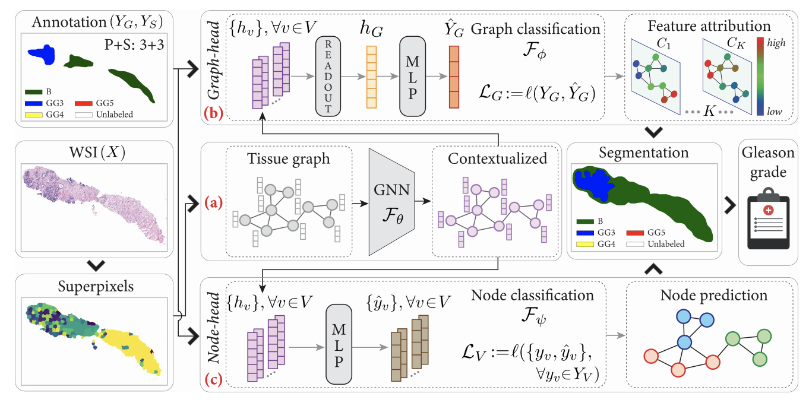 | SegGini: Learning Whole-Slide Segmentation from Inexact and Incomplete Labels using Tissue Graphs. *New* Valentin Anklin, Pushpak Pati, Guillaume Jaume, Behzad Bozorgtabar, Antonio Foncubierta-Rodríguez, Jean-Philippe Thiran, Mathilde Sibony, Maria Gabrani, Orcun Goksel. Medical Image Computing and Computer Assisted Intervention (MICCAI), 2021. |

|
Quantifying Explainers of Graph Neural Networks in Computational Pathology. *New* Guillaume Jaume, Pushpak Pati, Behzad Bozorgtabar, Antonio Foncubierta-Rodríguez, Florinda Feroce, Anna Maria Anniciello, Tilman Rau, Maria Gabrani, Jean-Philippe Thiran, Orcun Goksel. IEEE Conference on Computer Vision and Pattern Recognition (CVPR), 2021. |
| 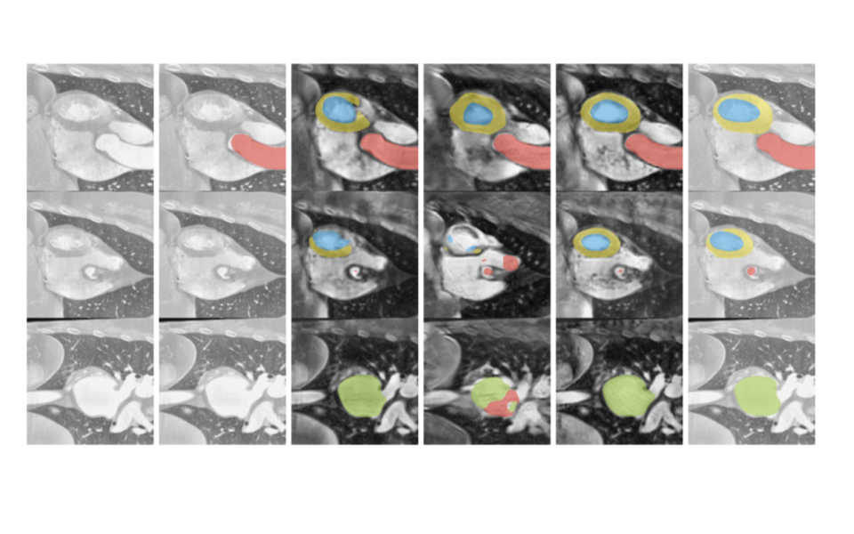 | Self-Attentive Spatial Adaptive Normalization for Cross-Modality Domain Adaptation. Devavrat Tomar, Manana Lortkipanidze, Guillaume Vray, Behzad Bozorgtabar, Jean-Philippe Thiran. IEEE Transactions on Medical Imaging (T-MI), 2021. |

|
Self-Rule to Adapt: Learning Generalized Features from Sparsely-Labeled Data Using Unsupervised Domain Adaptation for Colorectal Cancer Tissue Phenotyping. Christian Abbet, Linda Studer, Andreas Fischer, Heather Dawson, Inti Zlobec, Behzad Bozorgtabar, Jean-Philippe Thiran. The Medical Imaging with Deep Learning conference (MIDL), 2021. |
| 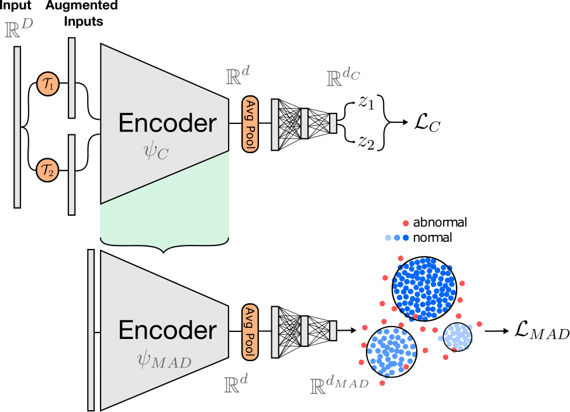 | Self-Taught Semi-Supervised Anomaly Detection on Upper Limb X-rays. Antoine Spahr , Behzad Bozorgtabar, Jean-Philippe Thiran. IEEE International Symposium on Biomedical Imaging (ISBI), 2021. |

|
Benefitting from Bicubically Down-Sampled Images for Learning Real-World Image Super-Resolution. Mohammad Saeed Rad, ..., Behzad Bozorgtabar, Jean-Philippe Thiran. Winter Conference on Applications of Computer Vision (WACV), 2021. |
| 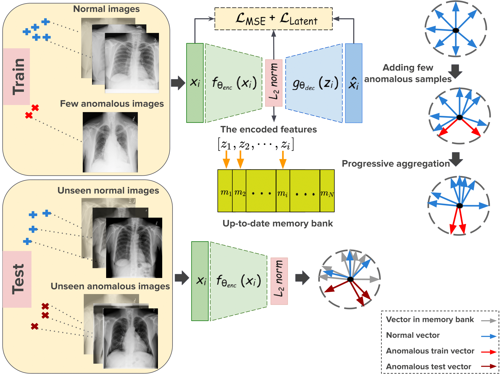 | SALAD: Self-Supervised Aggregation Learning for Anomaly Detection on X-Rays. Behzad Bozorgtabar, Dwarikanath Mahapatra, Guillaume Vray, Jean-Philippe Thiran. Medical Image Computing and Computer Assisted Intervention (MICCAI), 2020. |

|
Divide-and-Rule: Self- Supervised Learning for Survival Analysis in Colorectal Cancer. Christian Abbet, Inti Zlobec, Behzad Bozorgtabar, Jean-Philippe Thiran. Medical Image Computing and Computer Assisted Intervention (MICCAI), 2020. |

|
Structure Preserving Stain Normalization of Histopathology Images Using Self-Supervised Semantic Guidance. Dwarikanath Mahapatra, Behzad Bozorgtabar, Jean-Philippe Thiran, Ling Shao. Medical Image Computing and Computer Assisted Intervention (MICCAI), 2020. |
| 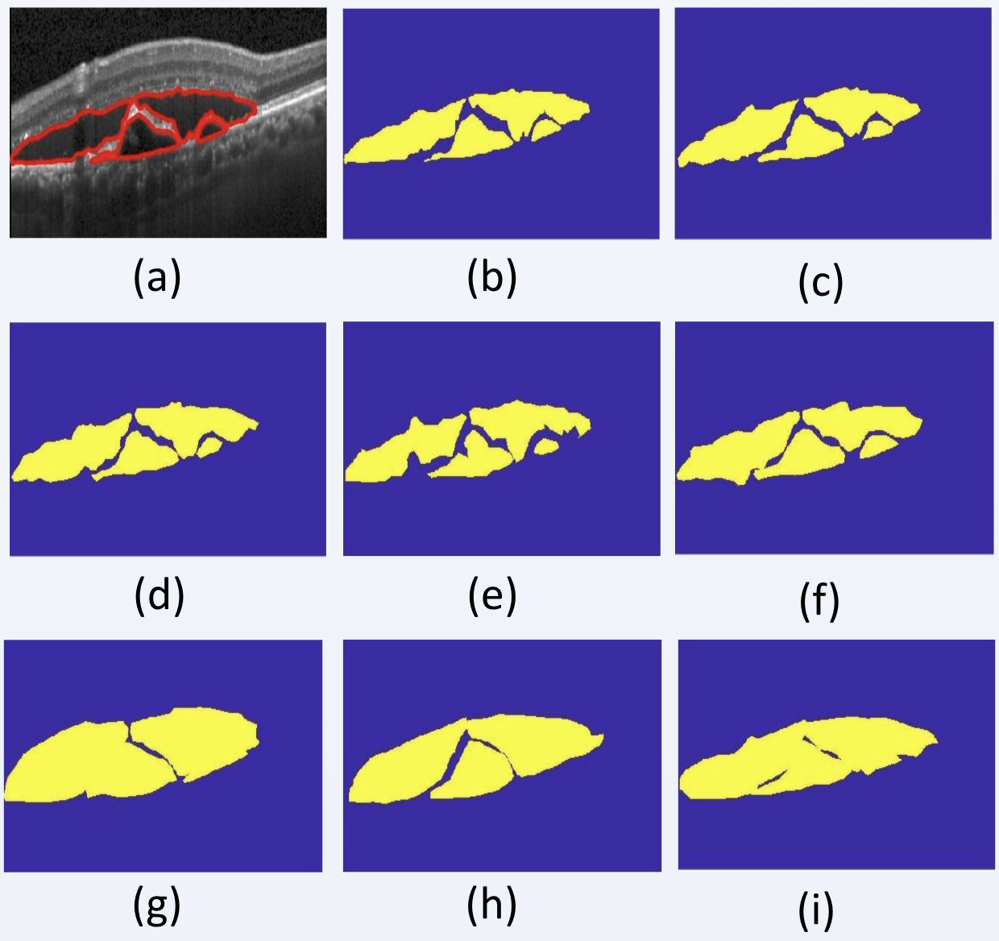 | Pathological Retinal Region Segmentation From OCT Images Using Geometric Relation Based Augmentation. Dwarikanath Mahapatra, Behzad Bozorgtabar, Jean-Philippe Thiran, Ling Shao. IEEE Conference on Computer Vision and Pattern Recognition (CVPR), 2020. |
| 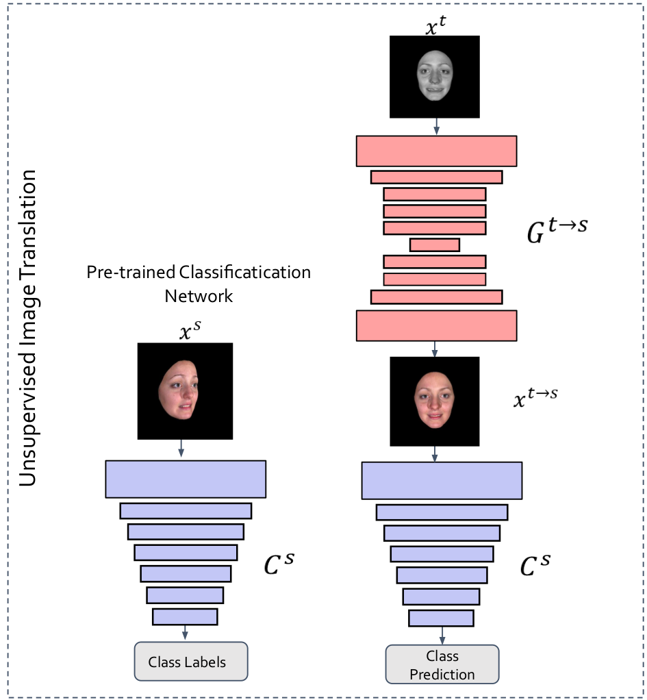 | ExprADA: Adversarial Domain Adaptation for Facial Expression Analysis. Behzad Bozorgtabar, Dwarikanath Mahapatra, Jean-Philippe Thiran. Elsevier Pattern Recognition Journal (PR), 2020. |

|
SynDeMo: Synergistic Deep Feature Alignment for Joint Learning of Depth and Ego-Motion. Behzad Bozorgtabar, Mohammad Saeed Rad, Dwarikanath Mahapatra, Jean-Philippe Thiran. IEEE International Conference on Computer Vision (ICCV), 2019. |
| 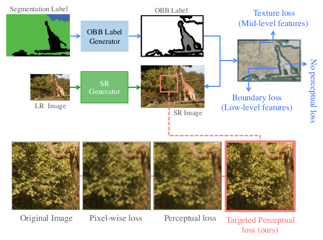 | SROBB: Targeted Perceptual Loss for Single Image Super-Resolution. Mohammad Saeed Rad, Behzad Bozorgtabar, Urs-Viktor Marti, Max Basler, Hazım Kemal Ekenel, Jean-Philippe Thiran. IEEE International Conference on Computer Vision (ICCV), 2019. |

|
Using Photorealistic Face Synthesis and Domain Adaptation to Improve Facial Expression Analysis. Behzad Bozorgtabar, Mohammad Saeed Rad, Hazım Kemal Ekenel, Jean-Philippe Thiran. IEEE International Conference on Automatic Face and Gesture Recognition (FG), 2019. |
| 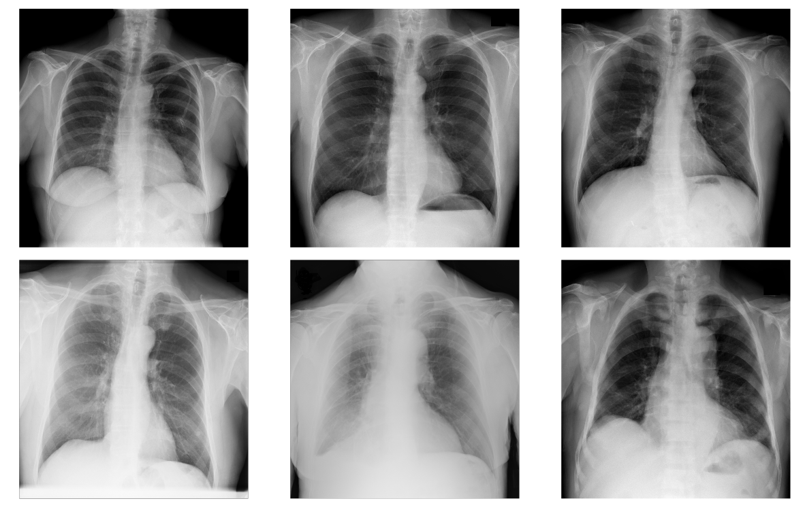 | Informative Sample Generation Using Class Aware Generative Adversarial Networks for Classification of Chest Xrays. Behzad Bozorgtabar, Dwarikanath Mahapatra, ..., Jean-Philippe Thiran, Mauricio Reyes. Journal of Computer Vision and Image Understanding (CVIU), 2019. |
| 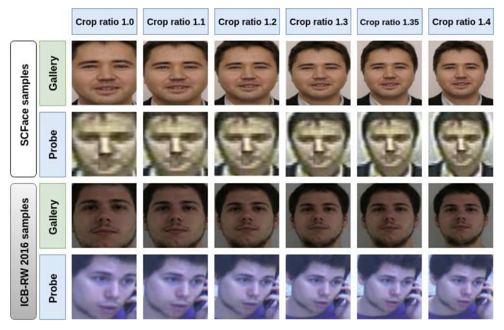 | Exploring Factors for Improving Low Resolution Face Recognition. Omid Abdollahi Aghdam, Behzad Bozorgtabar, Hazım Kemal Ekenel, Jean-Philippe Thiran. Computer Vision and Pattern Recognition Workshop (CVPR), 2019. |

|
Benefiting from Multitask Learning to Improve Single Image Super-Resolution. Mohammad Saeed Rad, Behzad Bozorgtabar, Hazım Kemal Ekenel, Jean-Philippe Thiran. Elsevier Neurocomputing Journal, 2019. |

|
Learn to Synthesize and Synthesize to Learn. Behzad Bozorgtabar, Mohammad Saeed Rad, Hazım Kemal Ekenel, Jean-Philippe Thiran. Journal of Computer Vision and Image Understanding (CVIU), 2019. |
| 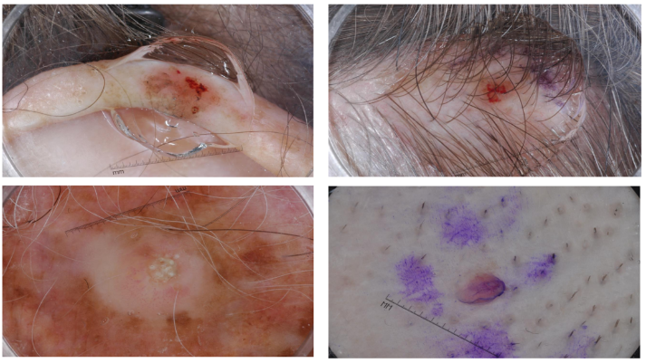 | DermoNet: Densely Linked Convolutional Neural Network for Efficient Skin Lesion Segmentation. Saleh Bagher Salimi, Behzad Bozorgtabar, Philippe Schmid-Saugeon, Hazım Kemal Ekenel, Jean-Philippe Thiran. EURASIP Journal on Image and Video Processing (JIVP), 2019. |
| 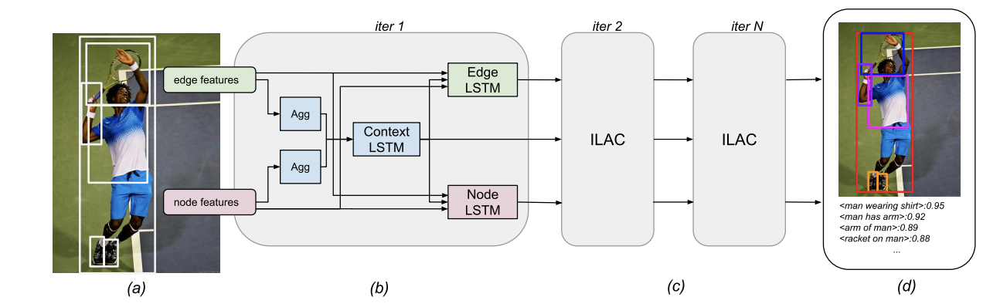 | Image-Level Attentional Context Modeling Using Nested-Graph Neural Networks. Guillaume Jaume, Behzad Bozorgtabar, Hazım Kemal Ekenel, Jean-Philippe Thiran, Maria Gabrani. Neural Information Processing Systems Workshop (NeurIPS), 2018. |
| 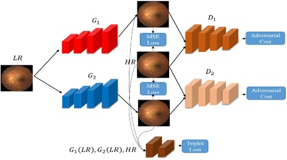 | Image Super-Resolution Using Progressive Generative Adversarial Networks for Medical Image Analysis. Dwarikanath Mahapatra, Behzad Bozorgtabar. Journal of Computerized Medical Imaging and Graphics, 2018. |
| 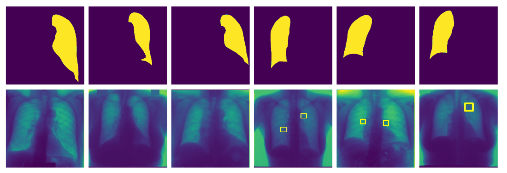 | Efficient Active Learning for Image Classification and Segmentation using a Sample Selection and Conditional Generative Adversarial Network. Dwarikanath Mahapatra, Behzad Bozorgtabar, Jean-Philippe Thiran, Mauricio Reyes. Medical Image Computing and Computer Assisted Intervention (MICCAI), 2018. |

|
Image Super Resolution Using Generative Adversarial Networks and Local Saliency Maps for Retinal Image Analysis. Dwarikanath Mahapatra, Behzad Bozorgtabar, Rahil Garnavi. Medical Image Computing and Computer Assisted Intervention (MICCAI), 2017. |
| 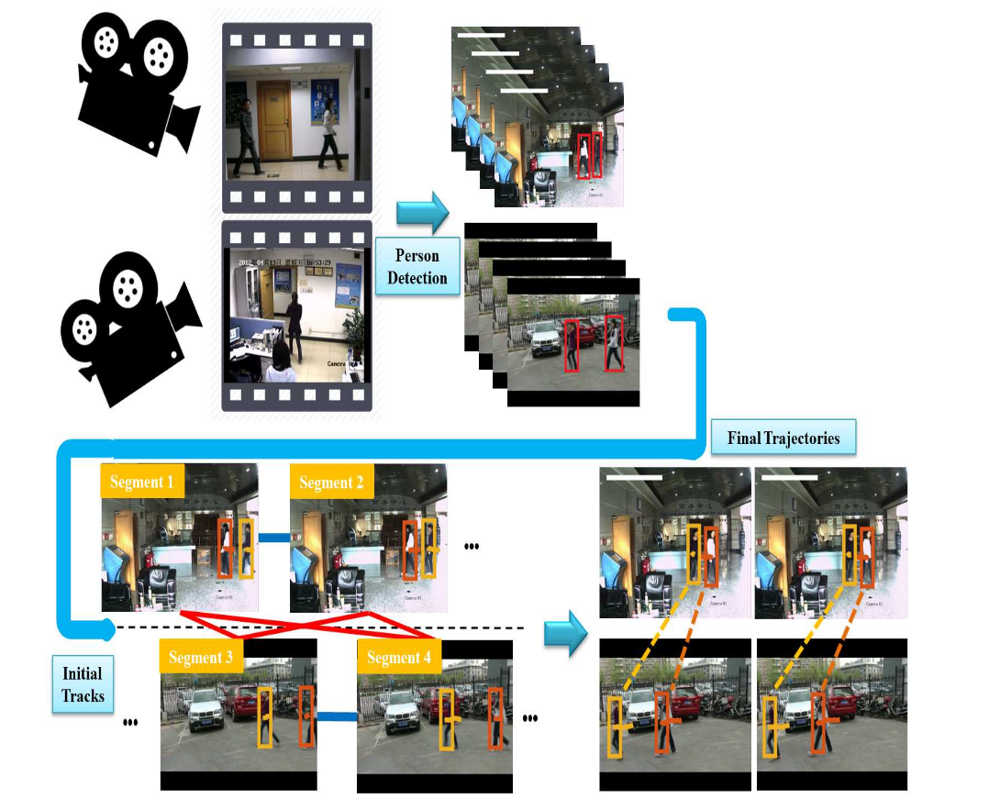 | MSMCT: Multi-State Multi-Camera Tracker. Behzad Bozorgtabar, Roland Goecke. IEEE Transactions on Circuits and Systems for Video Technology (TCSVT), 2017. |
| 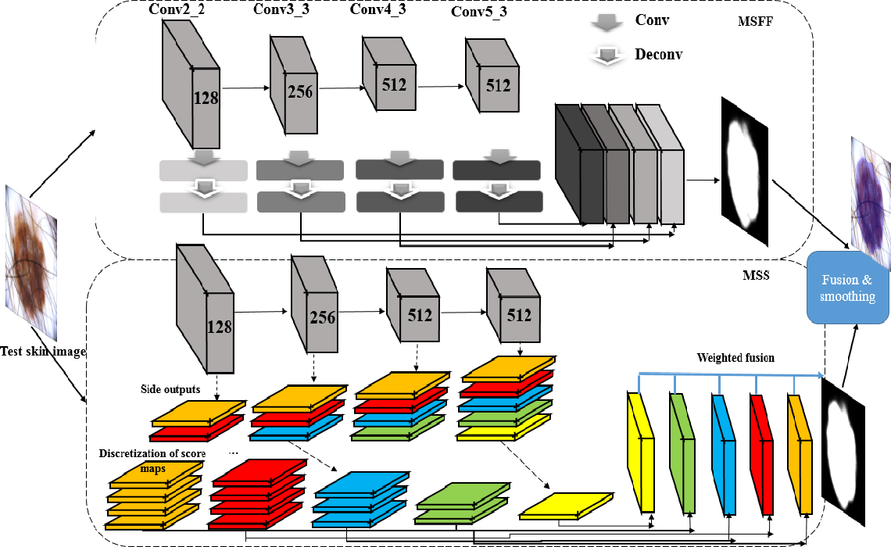 | Investigating Deep Side Layers For Skin Lesion Segmentation. Behzad Bozorgtabar, Zongyuan Ge, Rajib Chakravorty, Mani Abedini, Sergey Demyanov, Rahil Garnavi. IEEE International Symposium on Biomedical Imaging (ISBI), 2017. |

|
Tree-Loss Function for Training Neural Networks on Weakly-Labeled Datasets. Sergey Demyanov, Rajib Chakravorty, Zongyuan Ge, Behzad Bozorgtabar, Adrian Bowling, Rahil Garnavi. IEEE International Symposium on Biomedical Imaging (ISBI), 2017. |
| 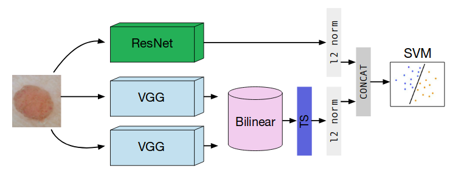 | Exploiting Local and Generic Features for Skin Lesions Classification. Zongyuan Ge, Behzad Bozorgtabar, Sergey Demyanov, Mani Abedini, Rajib Chakravorty, Adrian Bowling, Rahil Garnavi. IEEE International Symposium on Biomedical Imaging (ISBI), 2017. |

|
Efficient Multi-Target Tracking via Discovering Dense Subgraphs. Behzad Bozorgtabar, Roland Goecke. Journal of Computer Vision and Image Understanding (CVIU), 2016. |

|
Sparse Coding Based Skin Lesion Segmentation Using Dynamic Rule-Based Refinement. Behzad Bozorgtabar, Mani Abedini, Rahil Garnavi. Machine Learning in Medical Imaging (MLMI), 2016. |

|
Multi-level Action Detection via Learning Latent Structure. Behzad Bozorgtabar, Roland Goecke. IEEE International Conference on Image Processing (ICIP), 2015. |
| 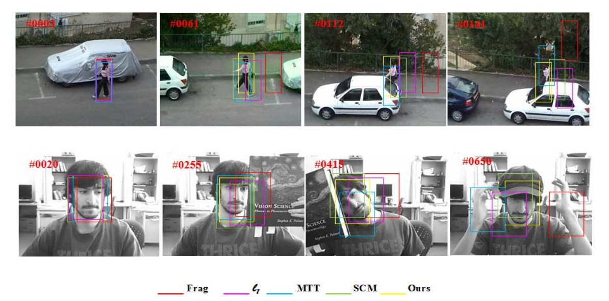 | Joint Sparsity-Based Robust Visual Tracking. Behzad Bozorgtabar, Roland Goecke. IEEE International Conference on Image Processing (ICIP), 2014. |
| 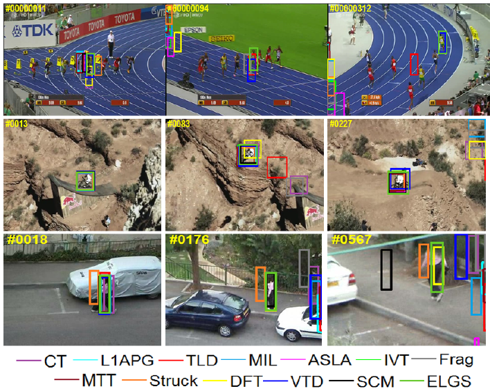 | Enhanced Laplacian Group Sparse Learning with Lifespan Outlier Rejection for Visual Tracking. Behzad Bozorgtabar, Roland Goecke. Asia Conference on Computer Vision (ACCV), 2014. |
| 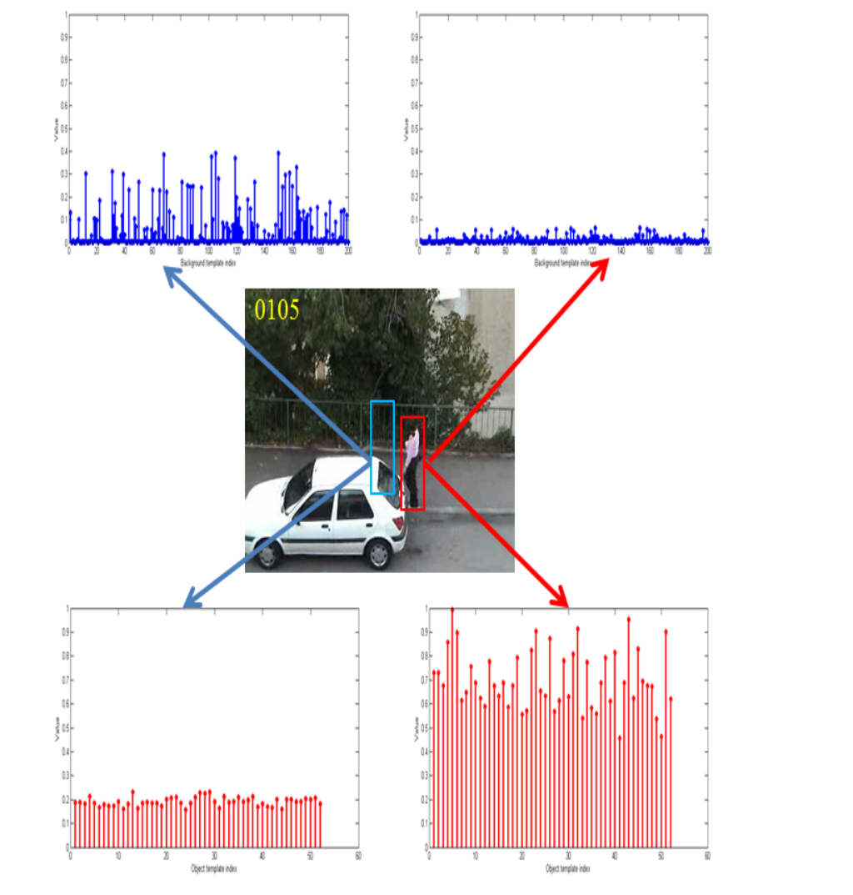 | Robust Visual Tracking via Rank-Constrained Sparse
Learning. Behzad Bozorgtabar, Roland Goecke. Digital Image Computing: Techniques and Applications (DICTA), 2014. |
Patents
| Automated Skin Lesion Segmentation Using Deep Side Layers lead inventor: Behzad Bozorgtabar Published with United States Patent and Trademark office as patent number US10373312B2 |
| Skin Lesion Segmentation Using Deep Convolution Networks Guided By Local Unsupervised Learning lead inventor: Behzad Bozorgtabar Published with United States Patent and Trademark office as patent number US10223788B2 |
| Structure-Preserving Composite Model for Skin Lesion Segmentation lead inventor: Behzad Bozorgtabar Published with United States Patent and Trademark office as patent number US10176574B2 |
| Risk Assessment Based on Patient Similarity Determined Using Image Analysis Behzad Bozorgtabar Published with United States Patent and Trademark office as patent number US10283221B2 |
| Searching Trees: A New System for Live Time-lapse Cell Tracking and Cell Progression lead inventor: Behzad Bozorgtabar Published with United States Patent and Trademark office as patent number US10510150B2 |
| Real-Time Annotation of Symptoms in Telemedicine lead inventor: Behzad Bozorgtabar Published with United States Patent and Trademark office as patent number US20190328300A1 |
| System And Method For Image Modality Conversion and Domain Adaptation Filed with International Bureau of WIPO as a PCT patent application with Applicaion No. PCT-IB2021-051376 |
| Annotation-Efficient Image Anomaly Detection lead inventor: Behzad Bozorgtabar Filed with International Bureau of WIPO as a PCT patent application with Applicaion No. PCT-IB2021-050753 |
| Superpixel Flow: Label Propagation System Helps Deep Learning for Accurate Segmentation lead inventor: Behzad Bozorgtabar Filed with United States Patent and Trademark office as docket YOR8-2016-1660 |
| Automatic Pattern Discovery for Skin Disease Classification Behzad Bozorgtabar Filed with United States Patent and Trademark office as docket YOR8-2016-2258 |
| Second Face: Combating Depression Through Virtual Reality lead inventor: Behzad Bozorgtabar Under Review YOR8-2016-2652 |
| Quantifying the Symptoms of Brain Disorders Via Facial, Body Posture and Language Analytics lead inventor: Behzad Bozorgtabar Under Review YOR820162998CN01 |
Honors, Awards, Leadership & Organization of Scientific Meetings
| Organizer FG 2019 Workshop on Face Analysis for Advanced Driver Assistance Systems (FA4ADAS), 2019 |
| ADAS & Me Project Leadership, EPFL, Horizon 2020, 2017- 2019 |
| IBM Research Division Image Award, Melbourne, Australia, 2017 |
| IBM First Patent Award, Melbourne, Australia, 2017 |
| Imagine Cup, Australian Finals, Microsoft, Sydney, Australia, 2014 |
| International Postgraduate Research Scholarship (IPRS), University of Canberra, Australia, 2012 |
| National Scholarship for Master's Degree, 2008 |
| Placed Third in Advanced Science Contest in Province, Placed First in the City, 2002 |
Grants
| PHRT Grant, 2018 |
| Swiss Cancer Foundation Grant, 2018 |
| Discovery Translation Fund (DTF 2.0), 2015 |
Invited Speaker
| Huawei France Future Image Signal Processing Workshop, Nice, France, 2020 |
| The Emerging Sensing Technologies Summit 2016 (ESTS’16), Melbourne, Australia, 2016 |
Work Experience
-
IBM Research, Melbourne, Australia.2016 – 2017
Postdoctoral Fellow
Project: Skin Cancer Image Processing
-
University of Canberra, Canberra, Australia.2014 – 2016
Research Assistant
Professional Activities
Massachusetts Institute of Technology (MIT), U.S.
IBM Research Zurich, Switzerland
University of Bern, Switzerland
Inception Institute of Artificial Intelligence, UAE
IEEE
CVPR
ICCV
MICCAI
WACV
IEEE Transactions on Medical Imaging (TMI)
IEEE Transactions on Image Processing (TIP)
Elsevier Journal of Computer Vision and Image Understanding (CVIU)
Elsevier Journal of the Pattern Recognition (PR)
Neurocomputing
Teaching
| 2019-present | Image analysis and pattern recognition (EE-451-4 ECTS- Bozorgtabar & Thiran), EPFL |
| 2019-present | Lab in signal and image processing (EE-490(f)-4 ECTS- Bozorgtabar & Thiran), EPFL |

© Behzad Bozorgtabar | Last updated: June 12 2021